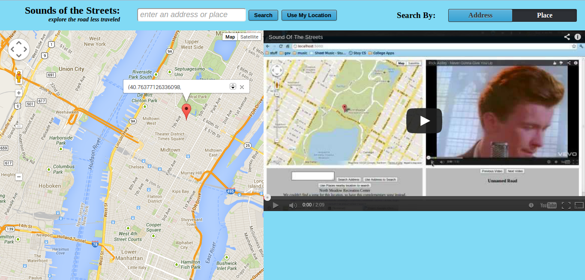
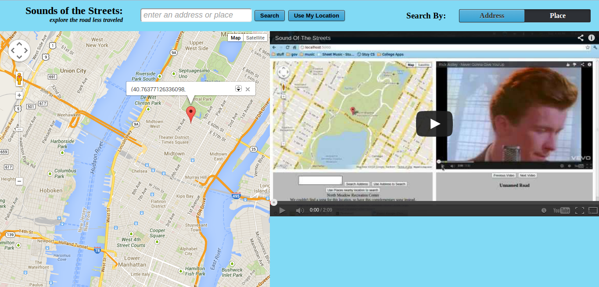
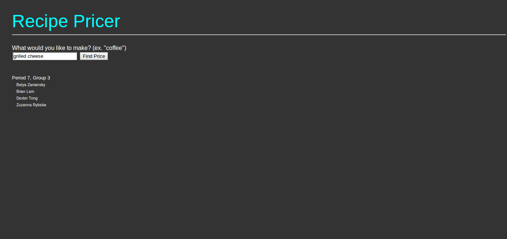
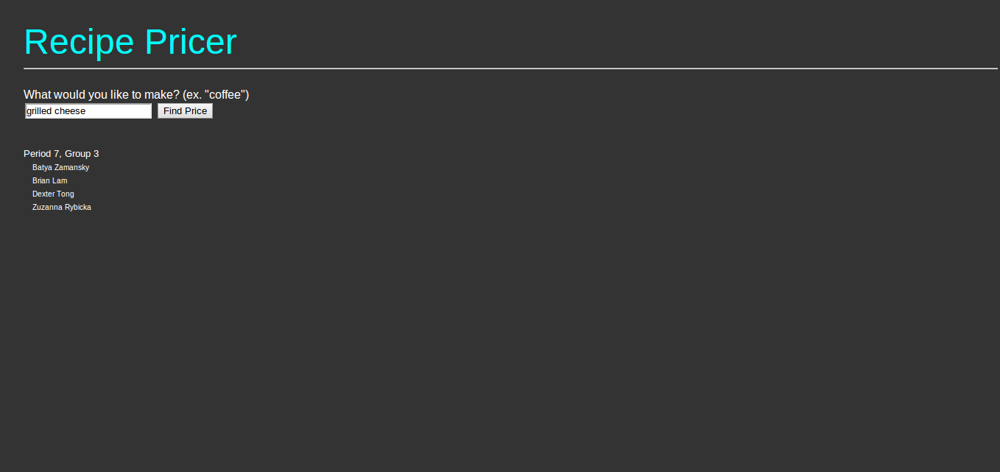

Projects
These are some projects I've worked on in the last few years. I've featured these because they are functioning and hosted on my website right now, and I feel that they demonstrate some of what I can do. There are some that I've done that aren't shown here but you can see on my github. They're not here either because I never got around to finishing them, or because I made them a while ago and don't have the software on my computer to load them to host them now.
Agar.Cardboard
Summer 2015


In the summer of 2015, I had an internship at Originate, and during the last month of my internnship, the other interns and I worked on an intern project. We originally didn't have a good idea of what to do, but some of the full time employees suggested that we look into doing something relating to virtual reality. We liked this idea, so we decided at first to do an immersive 3D meditation app. But then we discovered agar.io, and after enjoying playing it so much, we decided that it would be a much more fun, albeit potentially more difficult, project to do. So we decided to make agar.io in 3D for google cardboard.
We used Unity as the 3D game engine platform to build the application. The four of us interns divided up the work into separate parts. I personally worked on the basic gameplay components -- creating players and food for the players, and having the players move around and change size. We worked together to put all of the parts of the game together, and at the end of the month we demo-ed our work.
If you want to see the code, take a look on github.
Poem Generator
Spring 2013

Poem Generator is exactly what the name suggests, an app that generates poems. More specifically, it is an app where users can generate poems and then share them with their peers. Users can create poems such as sonnets, haikus, free-verse, and rhyming poems, as well as poems in the style of famous poets like Poe and Whitman. The most recently generated poems are displayed on the home page, and users can share poems they like via facebook.
Poem Generator uses Flask, mongoDB, HTML, CSS, and JS. It also uses nltk, a natural language toolkit that allows us to count syllables. The application also scrapes rhymebrain.com for rhyming words, and checks them against nltk to make sure the number of syllables is correct for the poem. In order to get poems in the style of other poets, we pulled collections by a select few famous poets from Project Gutenberg and scraped them, using markov chaining on them to emulate the styles of the various poets.
The poem generator is currently located here. If you want to see the code, take a look on github.
Sound of the Streets
Winter 2012
 

Sound of the Streets is an application that allows users to find songs based on their location. Sound of the Streets takes either an address or a more general place of the location the user selects, whether it be their current location or an arbitrary point on the map. It then finds a song that matches that place on Last.fm. After finding this song, the song is then sent to Youtube to find a video to accompany the song. The video is then played automatically on the website, in a playlist of songs all related to the location in question.
Sound of the Streets is currently located here. Unfortunately, the address setting in the app is currently under maintenance, so it is not always working properly. But if you want to see the code, take a look on github.
Recipe Pricer
Fall 2012
 

The Recipe Pricer is an application that allows the user to find a recipe for something they want to cook, and then see how much it will cost to purchase all the ingredients they need. Already have some of the ingredients? That's okay, you can click on an ingredient to send it to the "already purchased" part of your shopping list. Not the recipe you wanted? You are welcome to try to search again, with slightly different parameters.
This app uses Flask, HTML, JS, and CSS, and utilizes the Google Shopping API in order to find the costs of items. It screenscrapes from Allrecipes.com to find the recipes for the item in question, and once found, it scrapes the ingredients to find the costs of them.
Unfortunately, the Recipe Pricer is not currently hosted, because the website we screen-scraped to get the recipes has changed the design of the website so much that the code we wrote no longer finds the correct data. But if you want, you can still look at the code on github.